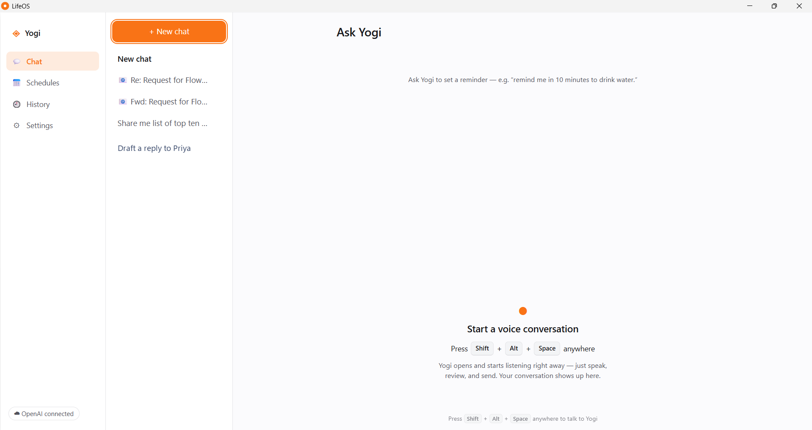
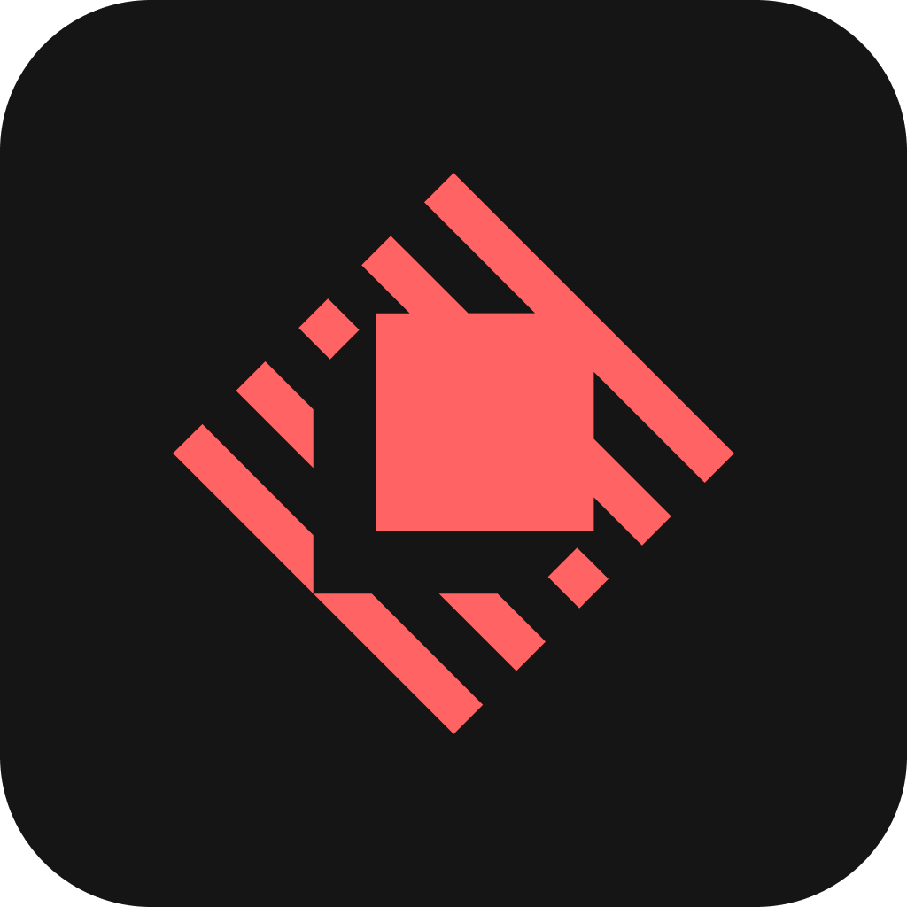
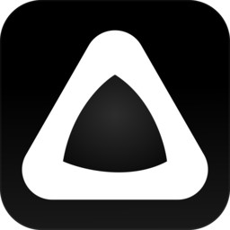
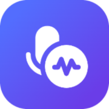
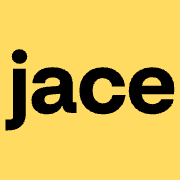
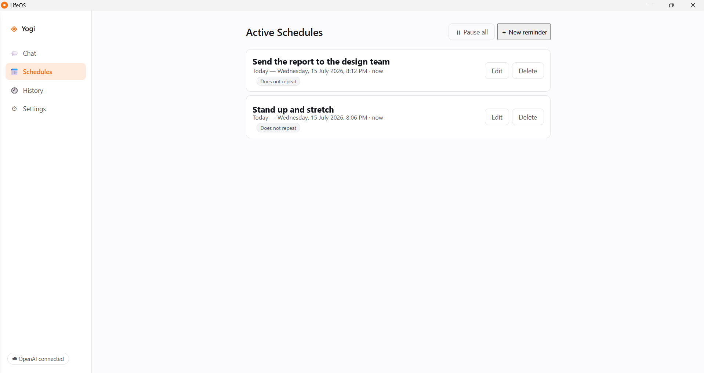
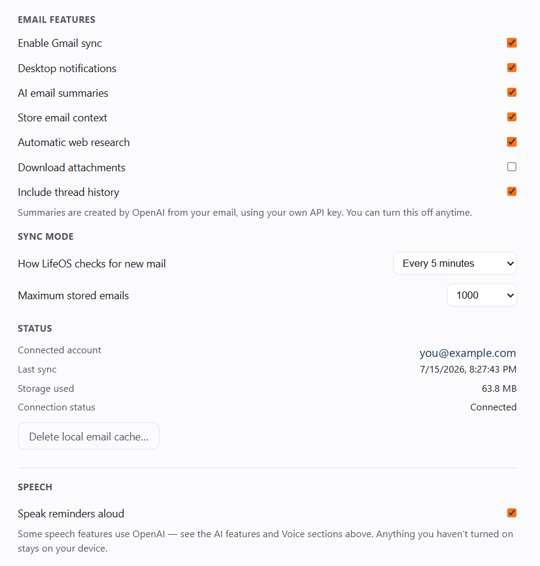
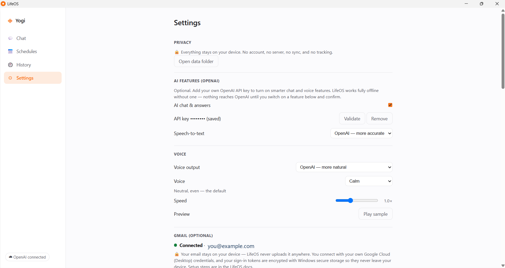
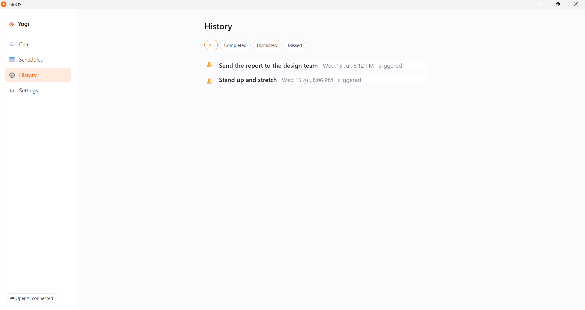

Voice-first, not voice-only
Speak or type. Yogi listens, shows a live transcript you can edit, and replies out loud or on screen - whichever suits the moment.
LifeOS is a voice-first companion for Windows named Yogi. Talk or type to set reminders, get answers from the web, and hear your inbox - with no account, no telemetry, and your data living in a file on your own machine.

You talk to Yogi like a person. It sets reminders, answers questions with live sources, and keeps an eye on your inbox - and it never sends your life to someone else's server unless you explicitly turn a feature on, with your own key.
Speak or type. Yogi listens, shows a live transcript you can edit, and replies out loud or on screen - whichever suits the moment.
Reminders, chats, and settings live in a local SQLite file. A built-in network filter blocks every outbound request until you enable a cloud feature.
A native Windows app with a system-tray presence and a global hotkey, so Yogi is one keystroke away from anywhere.
A voice assistant that sets reminders, answers questions, and reads your inbox has to touch the most personal parts of your day. Almost every one solves that by shipping it all to a server. LifeOS takes the opposite bet.
Reminders live in one app, questions in another, email in a third. Switching between them all day is its own kind of work - and the tools that could unify it want an account first.
Cloud assistants keep an always-open connection, often an always-listening mic, and ask you to trust a policy document. They can't run offline, and they confidently make up live facts.
Your reminders, chats, email, and voice are your life. A promise can be broken; code can't. LifeOS runs on your machine and proves it - the network is blocked by default, in code.
Everything runs on-device by default. Cloud intelligence is strictly opt-in, one toggle per capability, and always uses your own OpenAI key - billed to you, gated in the main process so the UI can't fake consent. You get a real companion without a data trail.
| How it works | Traditional cloud assistant | LifeOS |
|---|---|---|
| Where your data lives | On the vendor's servers | On your device - one local SQLite file |
| Account & sign-in | Required | None - no account, no sync |
| Works offline | No | Yes - reminders, time, local commands, on-device STT & TTS |
| Network by default | Always connected | Default-deny - zero outbound until you enable a cloud feature |
| AI provider & billing | Bundled subscription | Your own OpenAI key, per-feature toggles, billed to you |
| Microphone | Often always-on / wake word | Records only on hotkey or mic press - no wake word |
| Live facts | May hallucinate | Web search with citations, or an honest “couldn't find it” |
| Telemetry | Analytics & usage tracking | None - no analytics, crash reporter, or update ping |
| Privacy guarantee | A policy document | Enforced in code - network filter, CSP & DPAPI-encrypted keys |
| Price | Monthly fee | Free & MIT - you pay only your own API usage, if you opt in |
Great tools already exist for each slice of this - a launcher here, a dictation box there, an inbox agent somewhere else. LifeOS folds those workflows into one local-first Windows app. Here is an honest side-by-side, drawn only from each product's official site.
Voice-first, privacy-first AI companion for Windows - reminders, chat, web answers, and email, on-device by default.
This project
An extendable keyboard-driven launcher with built-in AI chat and 1000+ extensions. macOS-first, Windows in beta.
raycast.comAI voice-to-text that turns speech into polished writing inside the apps you already use, across desktop and mobile.
wisprflow.ai
AI voice-to-text with on-device transcription models and screen-aware modes. Works offline on supported hardware.
superwhisper.comAn open-source, local-first AI desktop agent that automates repeatable computer tasks with your own model and key.
deskwand.com
A keyboard-first AI productivity launcher for Windows, with AI assist, quick actions, and voice commands on its Pro tier.
getaskdesk.com
A cloud AI executive assistant that organizes your inbox, drafts replies, and automates email workflows.
jace.ai| Product | Voice | NL reminders | Desktop launcher | Local-first | Open source | Platforms | Bring your own key | Offline | Pricing | |
|---|---|---|---|---|---|---|---|---|---|---|
| ✓ | ✓ | ✓ | ✓ | ✓ | ✓ | Windows | ✓ | ✓ | Free · MIT | |
| Raycast | ✗ | ✗ | ✓ | ✗ | ✗ | ✗ | macOS · Win (beta) · iOS | Partial | Partial | Free / from $8·mo |
| ✓ | ✗ | ✗ | ✗ | ✗ | ✗ | Win · macOS · iOS · Android | ✗ | ✗ | Free / from $12·mo | |
| Superwhisper | ✓ | ✗ | Partial | ✗ | ✓ | ✗ | Win · macOS · iOS | ✓ | ✓ | Free / from $8.49·mo |
| DeskWand | ✗ | ✗ | ✗ | ✗ | ✓ | ✓ | Win · macOS · Linux | ✓ | Partial | Free |
| AskDesk | ✓ | ✓ | ✓ | ✗ | ✓ | ✗ | Windows | ✗ | Partial | Free / from $8·mo |
| Jace | ✗ | ✗ | ✗ | ✓ | ✗ | ✗ | Web | ✗ | ✗ | From $20·mo |
Compiled only from each product's official website (researched July 2026). “Not documented” means the official site does not list the feature - it may still exist. Products evolve; verify current details on their sites.
A launcher, a dictation box, an inbox agent - each is excellent at its one job, and none of them talk to each other.
Reminders in one window, voice in another, email in a third. The context-switching is its own tax on your day.
The richer the assistant, the more of your words leave your machine by default. A privacy policy is a promise, not a guarantee.
Voice, reminders, chat, web answers, and email fold into a single Windows app that works offline and blocks the network by default, in code. Cloud is opt-in, with your own key.
Press Alt + Shift + Space and a small always-on-top window opens and starts listening right away. Ask a question, set a reminder, get a spoken answer - then it tucks away. It never steals focus from what you were doing.
Say “remind me in ten minutes to drink water.” Yogi shows a proposal card and waits - nothing is saved until you confirm by click or by saying “yes.” When it fires, you get a Windows notification, a spoken line, and an always-on-top popup you can complete, snooze, or dismiss.

Connect your own Gmail account and each new email becomes its own chat: sender, a one- or two-sentence summary, action items, and key dates - with a single spoken heads-up. Ask follow-up questions in plain language. Your email is stored locally and never uploaded.

LifeOS works fully offline. Add your own OpenAI API key to unlock smarter chat, more accurate speech-to-text, and more natural voices - each behind its own switch, off by default. Nothing reaches OpenAI until you enable a feature and confirm.

A focused feature set that actually ships in v0.1.0 - no vaporware.
Hold a real, persistent conversation with Yogi across auto-titled, reopenable chat sessions.
Create reminders by talking or typing - Yogi asks instead of guessing when the time is unclear.
Ask live-fact questions and get answers with citations - and an honest note when a search fails.
Six voice personalities with a speed control and preview - streamed from OpenAI or offline Windows voices.
Speech is transcribed by a model that ships inside the app - offline by default, cloud only if you opt in.
See every active schedule, pause them all at once, and review a filterable history of what fired.
Turn each new email into a chat with a summary, action items, and a spoken heads-up.
A reminder can run a web lookup when it fires and speak the answer - not just the note you left.
Time, greetings, reminders, schedules, and settings all work with zero network and no key.
Every stage from the download link to a spoken answer - the real path through LifeOS, with the on-device work in the middle and OpenAI touched only when you've turned a cloud feature on.
Per-user install, no admin.
A single ~155 MB .exe (a portable build is available too).
Adds Desktop, Start-Menu & uninstall entries - no admin prompt. (The portable build just runs, no install.)
A second launch just focuses the running window - never a duplicate.
All local, before any UI shows.
SQLite via node:sqlite (WAL) opens lifeos.db, runs migrations to schema v8, and seeds 50 settings.
A default-deny network filter + CSP go up first. Nothing can reach the internet yet.
Conversation engine, action dispatcher, wall-clock scheduler, provider registry, and Gmail sync are wired up.
Hidden audio, popup & launcher windows spin up; the tray icon appears and Alt+Shift+Space is armed. Overdue reminders are caught up.
On-device by default.
Press the mic or the global hotkey. The mic engages only on your action - no wake word, no always-on listening.
An AudioWorklet down-samples the mic to 16 kHz and streams frames to the main process. Audio is never written to disk.
Transcribed on-device by the bundled sherpa-onnx Zipformer - or, if you opt in, by OpenAI gpt-4o-transcribe with automatic fallback to sherpa.
A local router answers time / greeting / settings instantly with no model. Otherwise the gated LLM (gpt-4o-mini, strict JSON) classifies the turn - and if there's no key, an offline parser takes over.
Re-routed to the local parser → a confirmation card. The LLM never creates it; nothing saves until you confirm by click or “yes.”
Answered by the model; live-fact turns trigger a web search (gpt-4o-mini-search-preview) and return an answer with sources.
When Gmail is connected, a new email is summarized into its own chat with action items - grounded, local, opt-in.
OpenAI only when enabled.
Requests reach api.openai.com only when a capability is enabled, keyed & consented, billed to your account. A reliability guard rewrites any fabricated success into an honest failure.
Spoken through a hidden audio window - offline Windows voices by default, or streamed OpenAI gpt-4o-mini-tts via Media Source Extensions when you've enabled cloud voices.
The reply fans out to every window - main chat, popup, and launcher stay in sync on one live conversation.
Locally, on your disk.
The turn is written to chat_turns, and any fired reminder to history - all in your local SQLite file, never uploaded.
A hardened Electron app: sandboxed renderer windows talk to a single Node main process across a
validated IPC boundary, and all the portable, most-tested logic lives in a pure-TypeScript
core/ layer that imports nothing from Electron or Node.
Four React 19 + TypeScript windows, styled in plain CSS custom properties (no Tailwind, no CSS-in-JS).
window.lifeos*Every call is origin-checked, validated with Zod .strict(), and returned in a Result<T> envelope - handlers never throw across IPC, and a stack trace never leaks.
ipcRenderer
The privileged loop that owns persistence, scheduling, and every cloud decision.
core/ - pure TypeScript zero Electron / Node importsThe portable, most-tested layer. This one rule is what keeps a future Tauri or mobile port on the table.
Behind a default-deny network filter. The allowlist is empty until you enable a cloud feature.
Download the Windows installer and launch LifeOS. No sign-up, no account, no cloud - it just opens.
Hit Alt + Shift + Space anywhere and talk. Yogi transcribes on-device and shows what it heard.
Yogi proposes a reminder or an answer; you confirm. Nothing is saved or sent without your say-so.
Drop in your own OpenAI key to enable smarter chat, cloud speech, and natural voices - each toggle is yours.

The renderer is a thin, sandboxed React shell. The Node main process holds the reliability spine - the scheduler, the parser, the database, and the single gate that lets anything reach the cloud.
core/.useSettings, useReminders, useConversation, useSessions, useSpeech. No Redux, no external store.chat / schedules / history / settings. No router library for four screens.Markdown renderer, a real focus-trap Modal, and a live mic waveform.prefers-color-scheme and a data-theme override.aria-live transcript, and mid-speech mic interruption.ConversationEngine runs each turn: local router → gated LLM → validate → branch → persist → broadcast, guaranteeing exactly one chat:done per turn.parseReminder (56 test fixtures) → an action dispatcher (propose → confirm, 90s timeout = cancel) → a single verified writer. The LLM never actuates.powerMonitor resume and a missed-while-closed catch-up.node:sqlite (WAL), 18 tables at schema v8, reached only through parameterized repositories.LifeOS was built with AI assistance. Here's the honest account of what that looked like, based on the project's own planning records and repo - no tool is claimed that the repo doesn't show.
What it helped with: the 60+ numbered planning & decision records, the natural-language reminder parser and its 56 fixtures, the RRULE recurrence math, the provider-seam gating, the Zod IPC contracts, and the documentation set itself.
Where it saved time: boilerplate-heavy work - wiring 62 typed IPC channels, generating test fixtures, drafting docs, and mechanical refactors moved far faster than by hand.
Judgment calls: the framework choice (Electron over Tauri/Flutter), the “LLM proposes, user disposes” actuation gate, and the privacy-in-code invariants were human-directed decisions the AI implemented against.
Manual verification: anything needing real hardware - live microphone and audible TTS, the Google OAuth round-trip, desktop notifications, and packaging past SmartScreen - is verified by a person, not the model. Those are the “verified by construction” gaps the docs call out.
Uniformly framed so nothing is stretched or cropped. Click any shot to zoom.
The core loop, the features worth showing off, and the awkward moments - handled honestly.
A frameless, always-on-top widget summoned by a global hotkey. It shows over any app, starts listening immediately, and never steals focus - and it shares one live conversation with the main window and the reminder popup.
Say “remind me in ten minutes to drink water.” A deterministic local parser (56 test fixtures) reads it, proposes a card, and waits - the model never creates the reminder, and nothing is saved until you confirm by click or by saying “yes.”
A default-deny network filter blocks every outbound request until you switch on a cloud feature. Your key is DPAPI-encrypted and never crosses the app's internal boundary. Privacy you can verify, not just a policy you're asked to trust.
The launcher stops speaking, hides, and snapshots your session; the reminder popup takes over. When you're done, it re-opens on the same chat and re-reads the interrupted reply from the start.
Reminders, time, greetings, help, and “show schedules” all work with zero network. On-device speech-to-text and Windows voices keep running; only genuine reasoning is unavailable.
The chip reads “Offline · on-device.” Reminder-shaped input still routes to the local parser; a request that truly needs the cloud gets an honest “connect OpenAI” notice - never a fake answer.
Cloud speech-to-text falls back to sherpa; cloud voice falls back to Windows; a failed chat or search returns an honest message - never a hang, never a fabricated success.
Offline STT can hear “remained me” for “remind me.” A bounded edit-distance normalizer canonicalizes the mangled cue so the reminder still parses. If the model is missing, typing still works.
Gmail is opt-in and off by default. With it disabled there are no email chats, no sync, and no Google requests - the rest of the assistant is completely unaffected.
Most assistants send everything to a server and ask you to trust a document. LifeOS flips that: it runs on your machine, and cloud access is opt-in, per-feature, and uses your own key.
Reminders, chats, and settings sit in a local SQLite database you can open and read yourself.
A built-in filter blocks every outbound request until you switch on a cloud feature.
No analytics SDK, no crash reporter, no usage stats, no update ping. LifeOS doesn’t know you exist.
Cloud features use your OpenAI key, encrypted with Windows secure storage and billed to you.
Native desktop performance, a tiny runtime dependency surface, and one language end to end.
One language across the main process, renderers, and the pure core - with strict types at the IPC and LLM boundaries.
The app shell - Chromium 150 + Node 24. The main process is a never-throttled Node loop, ideal for a scheduler.
The four sandboxed renderer windows - main, reminder popup, voice launcher, and hidden audio host.
Bundles main, preload, and renderer with the single-file preloads that sandbox mode requires; HMR in dev.
Produces the NSIS installer and the single-file portable exe - a per-user install with no admin prompt.
A local WAL database built into Electron - no native module to compile or rebuild - behind a swappable driver.
An on-device streaming Zipformer (~68 MB) - the default, offline, zero-network transcription engine.
Offline Windows voices by default; streamed OpenAI gpt-4o-mini-tts over Media Source Extensions when opted in.
gpt-4o-mini chat, gpt-4o-transcribe STT, gpt-4o-mini-tts voice, and gpt-4o-mini-search-preview web search - each behind its own toggle, on your key.
Natural-language date parsing - turns “in ten minutes” or “next Monday at 7” into a real instant.
DST-correct next-occurrence math and timezone-aware recurrence, with RRULE strings computed on top.
.strict() at every IPC handler and on the LLM turn schema - an unknown key is a rejection, not a silent pass.
Windows DPAPI encryption for the OpenAI key and Gmail tokens at rest - plaintext is produced only in main, never across IPC.
523 tests across 55 files; ESLint enforces the golden rule that core/ imports nothing from Electron or Node.
A single package-lock.json, no pnpm or yarn - and only four runtime dependencies ship in the app.
Hand-authored inline SVG icons and CSS custom properties - no icon library and no CSS framework in the app.
LifeOS itself is free. Cloud features use your own OpenAI key and are billed to you directly. Here's roughly what that adds up to - so there are no surprises.
| Capability | OpenAI model | Approx. price | Free offline alternative |
|---|---|---|---|
| Speech-to-text | gpt-4o-transcribe | ~$0.006 / minute of audio | ✓ sherpa-onnx, on-device |
| Chat & responses | gpt-4o-mini | ~$0.15 / 1M input · $0.60 / 1M output tokens | ✗ needs a key |
| Text-to-speech | gpt-4o-mini-tts | ~$0.015 / minute of audio | ✓ Windows voices |
| Web search | gpt-4o-mini-search-preview | gpt-4o-mini tokens + a small per-call search fee | ✗ needs a key |
gpt-4o-mini turn (~1,200 input + ~150 output tokens). STT ≈ $0.006 + chat ≈ $0.0003 +
TTS ≈ $0.0075. Text-only chat, or voice with the offline STT/TTS defaults, costs far less because it skips
the per-minute audio charges.
gpt-4o-mini)LifeOS keeps everything in one local SQLite file you can open and read yourself. No cloud bucket, no hidden config sprawl - just a database on your machine.
%APPDATA%\LifeOS\lifeos.db
(development builds use %APPDATA%\lifeos\)
%APPDATA%\LifeOS\
├─ lifeos.db main SQLite database - all your data
├─ lifeos.db-wal write-ahead log · do not edit
├─ lifeos.db-shm shared-memory index · do not edit
└─ … Electron profile (cache, GPU, logs)SQLite via node:sqlite, WAL mode, foreign keys on - schema
user_version 8, 18 tables. Tip: Settings → Privacy → Open data
folder jumps straight here.
reminders, reminder_historychat_sessions, chat_turnssettingsgmail_threads, gmail_messages, …email_ai_context, web_researchapp_logssettings · DPAPI ciphertextOpen lifeos.db with any SQLite viewer - DB Browser for SQLite is the easy pick. Quit LifeOS first (or open read-only) so it isn't writing the WAL while you browse.
Leave the -wal / -shm sidecars alone, and never edit the *_ciphertext columns - your OpenAI key and Gmail tokens are DPAPI-encrypted there, so a manual edit just corrupts them.
Settings → Danger zone → type RESET deletes lifeos.db and its sidecars, then relaunches. Uninstalling the app deliberately keeps this folder, so an accidental uninstall never loses your data.
safeStorage, which uses the
Windows Data Protection API (DPAPI). The ciphertext lives in the settings
table - LifeOS does not use the Windows Credential Manager. Decrypted values exist only in the
main process and never cross into the UI.
Everything below is on the roadmap, not in today's build. Marked plainly, because a showcase that overstates itself isn't much of a showcase.
latest.yml already ships; wiring electron-updater is the step left.core/ is already pure TypeScript; only the Electron layer changes.Framed as hypotheticals - LifeOS is a free, open-source project today.
Free, open-source, and yours to keep. Install it and start talking to Yogi in minutes.